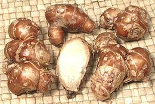
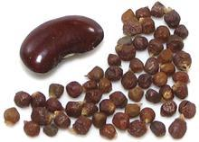
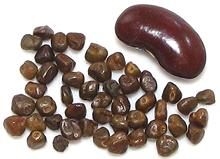
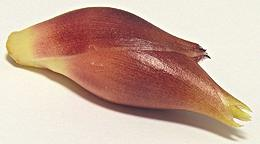
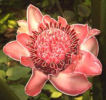

SAFARI
Users
General & History
Gingers are all tropical plants originating from South and Southeast Asia, and Central and South America. Several Old World species were spread far and wide in prehistoric times, so their exact origin can no longer be determined. Since the age of European exploration they have been spread to tropical areas throughout the world and become important in all the local cuisines.
Varieties
Ataiko
 [Otaiko, Atariko, Rohojie, Rohoji, Rigije, Orima; Aframomum subsericeum
[Otaiko, Atariko, Rohojie, Rohoji, Rigije, Orima; Aframomum subsericeum
Native to Nigeria and Cameroon, and south into D.R. Congo, this plant is
of the Ginger family. Its seeds are used as a spice in soups in Nigeria,
particularly Banga (Palm) and Pepper soups. These seeds taste similar to
Green Cardamom seeds but the flavor is not a bright. The photo specimens
were about 0.075 inch diameter and 0.210 inch long (2 x 5.3 mm). They were
purchased from a US vendor of West African foods for 2021 US $4.87 per ounce.
Cardamom - Green
 [True Cardamom, White Cardamom; Elaichi (India); Hel (Persia, Hebrew);
Hayl (Arabic); Elettaria cardamomum]
[True Cardamom, White Cardamom; Elaichi (India); Hel (Persia, Hebrew);
Hayl (Arabic); Elettaria cardamomum]
Green Cardamom is native to India
and Malaysia with India producing nearly the entire world's supply. The seeds
are highly aromatic with a sharp brilliant flavor. White cardamom is green
that has been bleached. This is the cardamom to use whenever black is
not specifically called for by name or region, and is the cardamom commonly
available in Europe and North America.
Details and Cooking.
Cardamom - Black
 [Brown Cardamom; Kali Elaichi, Moti Elaichi (India); tháo
quá (Vietnam); Amomum subulatum (India), Amomum
costatum (China)]
[Brown Cardamom; Kali Elaichi, Moti Elaichi (India); tháo
quá (Vietnam); Amomum subulatum (India), Amomum
costatum (China)]
Black Cardamom is not interchangeable with
green cardamom. While the green is sharp and brilliant the black is dark
and smoky with high tones of camphor and mint. It is the cardamom used in
China and Vietnam, and in India it is often included in Garam Masala mixes
and certain curries. It is also used medicinally, particularly in China.
Details and Cooking.
Tsaoko
[(Japan); Cao Guo, Tsao-kuo (China); Amomum tsaoko]
This plant grows in the mountains of Yunan provence of China,
Laos and Viet Nam. It is IUCN Red listed NT (Near Threatened) as its
range is rather small and it is being overharvested. Some is in
cultivation. This Cardamom is used medicinally and to a much lesser
extent as a spice in cuisine. The shell is tough and leathery, while the
seeds are hard, tough, and less aromatic than those of regular Black
Cardamom. The photo specimens were purchased from a large Asian market
in Los Angeles (San Gabriel) for 2016 US $1.69 for 1-3/4 ounces (50 gms).
The were up to 1.48 inches long by 0.79 inch diameter and the batch
had an average weight of 0.13 ounces each (3.4 gm).
Galangal
 [Greater Galangal, Galanga, Siamese Ginger; Kha (Thai); Laos, Lengkuas,
(Indonesia); Rieng (Viet); Alpinia galanga]
[Greater Galangal, Galanga, Siamese Ginger; Kha (Thai); Laos, Lengkuas,
(Indonesia); Rieng (Viet); Alpinia galanga]
This is an essential ingredient for Southeast Asian cuisines, particularly those of Thailand and Indonesia. While it looks rather similar to ginger, the flavor is very different, the skin is lighter in color, the inside is white rather than yellow, and it's practically wood hard. Galangal is more earthy, with flavors of citrus, pine and camphor.
Fresh root is increasingly available in the US, with some now grown
in California and Florida. Dried powder is also available, but fresh is
highly preferred for most uses. It was a commonly used medicinal in
Europe during the 11th and 12th centuries and is still used medicinally
in Asia, as well as having a place in African American hoodoo magic.
Details and Cooking.
Galangal - Lesser
[Vrai Galanga (French); Khaa Lek (Thai); Riéng, Thuóc, Cao luong khuong (Viet); Kenkur (Indonesia); Alpinia officinarum]
Once much used as a flavoring and medicinal throughout Ancient and Medieval Europe, and featured in many herbals as preferred over greater galangal, this plant is now rare outside Southeast Asia. It is still used as a flavoring in Russia (to flavor vinegar) and the Baltic Countries (spice and medicinal). Extracts are used to flavor beverages and for similar uses. It is most used in Southern China, Vietnam and Indonesia in curries and the like, usually dried and ground. See the next paragraph for the "Lesser Galangal" more commonly known today. Photo by Luc Viatour distributed under license Creative Commons Attribution-ShareAlike 3.0 Unported.
Galangal - Lesser / Sand Ginger
 [Sand Ginger, Aromatic Ginger; Kenchur (Indonesia); Cekur (Malay); Shan Nai, Sha Jiang (China (sand ginger)); Kaempferia galanga | Resurrection Lily, Kaempferia rotunda]
K. galanga is a stemless plant originating in southern India, but no longer used in Indian cuisine. It is used for cooking in Malaysia and Indonesia, particularly Java and Bali. Outside this region it is known mostly as a medicinal, though some is used in dried form as a seasoning in China south of the Yangtze, including Sichuan.
Unlike all other galangals, K. galanga rhizomes are dark and reddish in color. The photo specimens of K. galanga were purchased at a Los Angeles Asian market labeled "Sand Ginger". The nodules ranged from 3/4 inch to 1-1/8 inch diameter. The texture and flavor are very similar to Krachai with a faint hint of licorice. More widely available Krachai makes a suitable culinary substitute. The medicinal properties of K. galanga are of considerable interest and are being studied particularly for use against worms and mosquitos.
K. rotunda is native to Southeast Asia and is widely grown as
a medicinal and decorative but is not used in cooking. It is mainly used
ground to a paste to treat sprains and similar problems but is being
studied for antioxidant properties. It is called "resurrection lily"
because it's light blue orchid-like flowers appear right out of the
ground in spring, before any stems or foliage appear.
Ginger
[Khing (Thai); Saenggang (Korea); Inji (Tamil, Malaysian); Aadu (Gujarati), Alay (Marathi); Adrak (Hindi, Urdu); Zanjabil (Arabic); Zingiber officinale]
Originally from South or Southeast Asia, ginger is far and away the most used of the Zingiberaceae family rhizomes. The top ten producers ship more than a million and a half tons (US) annually, with India China and Indonesia the major producers. Nigeria is the only major producer outside Asia. Available fresh, dried and ground, ginger is now important in every major cuisine worldwide. The photo specimen was 7-1/2 inches long and weighed 12 ounces, a small part of a ginger "reef". Reefs can easily exceed 30 pounds.
Ginger is also important in both formal and folk medicine, particularly
for nausea and stomach upset. It has been shown effective against motion
sickness, morning sickness and nausea from chemotherapy, but not for
postoperative nausea. It is also used as a flavoring to cover
medicinal tastes.
Details and Cooking
Ginger - Young
[Stem ginger, Green ginger, Pink ginger, New ginger, Spring ginger, Zingiber officinale]
This is regular ginger when new sections of rhizome have formed and
sprouted leaf stems. It is juicier and much milder than older ginger
and has a tender skin that is generally not peeled. It is seasonal so not
always available. Ginger in this state of growth is often pickled,
particularly in Southeastern India. It is often called for in Southeast
Asian recipes and is prefered for general cooking in Cambodia.
Details and Cooking.
Ginger - Jamaica
[Jake]
Jamaica Ginger was a patent medicine concoction which gained notoriety during the US period of Prohibition. Since it was 70% to 80% alcohol and reasonably palatable a large demand for the product developed. The U.S. Treasury Department forced a change in the formulation to require enough ginger solids to make it unpalatable. Enterprising producers used various subterfuges to get it to pass government inspection but still be drinkable.
Unfortunately one of the most successful of these used a plasticizer
that, while originally thought safe, turned out to be a neurotoxin. As many
as 50,000 people who consumed it were struck with serious paralysis of the
extremities and most never recovered.
Photo by Deltabeignet contributed to the public domain.
Grains of Paradise
 [Melegueta pepper, Alligator pepper, Guinea pepper, Guinea grains, Aframomum melegueta - related Atzoh, Mbongo (West Africa) Aframomum citratum]
Native to West Africa, this spice is rarely seen in North America
but some is grown in the Caribbean. It was important to 15th century
Europe but was completely replaced by black pepper by the 16th century.
Currently it is used in West and Central Africa and quite often used in
Morocco and Tunisia. The seeds are always ground and added near the end
of cooking. The photo specimens, about 0.12 inch (3 mm) were purchased
from an on-line spice vender in the United States. The best
substitute is probably Black Cardamom. On the islands
in the Gulf of Guinea the fresh fruits are eaten raw.
Details and Cooking.
Korarima
 [Ethiopian Cardamom; Aframomum corrorima]
Native to Tanzania and western Ethiopia, this spice is very
important to the cuisines of Ethiopia and Eritrea. It is used in various
spice mixtures, such as berbere, mitmita, and awaze hot sauce. The pods
are smooth like green cardamom, but dark brown and about the size of
black cardamom pods. the photo specimens, about 0.17 inch long, were
purchased from an on-line spice vendor in the United States. The best
substitute is probably
Black Cardamom - somewhat
different flavor, but in the ballpark.
Krachai
 [Kra chai, Kachai, Chee-puu, Poh-see (Thai); Fingerroot, Chinese ginger,
Chinese keys, Lesser ginger (English); Temu kunci (Indonesia); Gieng rung
(Viet); Kaempferia pandurata alt. Boesenbergia pandurata,
B. rotunda]
[Kra chai, Kachai, Chee-puu, Poh-see (Thai); Fingerroot, Chinese ginger,
Chinese keys, Lesser ginger (English); Temu kunci (Indonesia); Gieng rung
(Viet); Kaempferia pandurata alt. Boesenbergia pandurata,
B. rotunda]
Originating in Southeast Asia and Southern China, this plant grows from rhizomes that have the form of a cluster of long fingers. It is not much available fresh outside Thailand, but it is available in Asian markets frozen or put up in jars of brine. Both forms are quite acceptable for use. It is also available in tiny jars as dried powder and as bags of dried strips, but dried is more bitter and less flavorful than frozen or brined. Krachai is sometimes wrongly labeled "lesser galangal", a very different plant.
Krachai is used mainly in Thailand though some is used in Vietnam,
Malaysia and Indonesia. Outside those regions it is almost unknown except
dried as a medicinal in China. The flavor is milder and much more earthy than
ginger or galangal. It is most often used in fish dishes but also with
beef and rice or as a general aromatic vegetable. The photo
specimen in the front was 3-7/8 inches long and 0.52 inch diameter at the
big end. These were brined.
Details and Cooking.
Mango Ginger
[Ama Haldi (india), Am Haldi (West Bengal), Amba Haldi, Curcuma mangga]
Native to Eastern and Southern India and related to turmeric,
rhizomes of this plant are similar to ginger but have a distinctly mango
flavor. They are most used in pickles in Southern India. I have seen
sites listing "mango ginger" as an alternate name for turmeric but this
is not correct.
Photo by Vicharam contributed to the Public domain..
Myoga Ginger
 [Zingiber mioga]
The shoots and flower buds of this ginger plant are used in Japan
and are now grown in Australia and New Zealand for export to Japan. The
buds, which are fairly mild, are generally shredded very fine and used as
toppings and garnishes, particularly for yakko (chilled tofu), miso soup
and sunomono (vinegared salad).
Photo by Avenafatua distributed under license
Creative Commons
Attribution ShareAlike v2.5 Generic.
Torch Ginger
 [Wax Flower, Red Ginger Lily, Porcelain Rose; Kaalaa (Thai); Bunga Kantan (Malay); Bunga kecombrang, honje, Asam cekala (Indonesia); Xiang Bao Jiaing (China); Etingera elatior]
The shoots and buds of this rather striking flower are used as an
herbal spice in Southeast Asia. The sweet and sour seed pods are also
used, as well as the black seeds within them, particularly by the Karo
people of Sumatra.
Photo by Geni distributed under license
Creative Commons
Attribution 2.5 Generic.
Turmeric - Yellow
 [Haldi (India); Kha min, Kha min chan, Khamin heluong, (Thai); Nghe,
Bot nghe, Cu nghe, (Viet); Kunyit (Indonesia); Curcuma longa
| similar Java Turmeric; Temu lawak (Java);
C. xanthorrhiza]
[Haldi (India); Kha min, Kha min chan, Khamin heluong, (Thai); Nghe,
Bot nghe, Cu nghe, (Viet); Kunyit (Indonesia); Curcuma longa
| similar Java Turmeric; Temu lawak (Java);
C. xanthorrhiza]
Turmeric probably originated in Southeast Asia but was carried far and wide in prehistoric times. Today it is most used in India where the majority of dishes contain at least some. In India it is most used dried and ground to a powder before using, but in Southeast Asia it is often used fresh. Turmeric leaves are also used in some recipes.
The intense yellow-orange color of fresh turmeric will stain all your
kitchen equipment and cutting boards bright yellow, but it is not at all
permanent and fades very quickly exposed to sunlight. Turmeric is now
being studied as one of the most powerful natural anti-cancer substances
and for treatment of Alzheimer's disease. Java Turmeric looks the same,
but is said to have stronger medicinal properties.
Details and Cooking.
Turmeric - White
[Zedoary (Europe - from Farsi Zedwaar); Temu putih (Indonesia); Kha min khao, Khamin khun, Kha min hawkuen, Kha min io (Thai); Curcuma zedoaria ]
Fresh white turmeric is used in Thailand and Indonesia as an aromatic
vegetable. It is milder than yellow turmeric and doesn't present the staining
problem. Dried it is more bitter and must be used sparingly. Turmeric
leaves are also used in some recipes. In India it is used as a flavoring in
pickles. Medicinally it is used in China and Japan and also in perfumes and
liquors. It can often be found in markets serving an Indian community, sold
alongside fresh yellow turmeric and can be frozen for longer storage.
Details and Cooking.
Cannaceae Family
Canna Lily[Genus Canna (various of 19 species)] Native to the tropical and subtropical Americas, from the US South to northern Argentina, these plants are now naturalized through all the world's tropics and subtropics. They are widely appreciated for their colorful foliage (some species) and bright colorful flowers (other species). Other than as a decorative, all parts of these plants are useful,
including rhizomes for edible starch, used to make noodles in
Vietnam (mien dong). Young shoots edible as a vegetable and immature
seeds are added to tortillas. In parts of northern India rhizomes are
fermented to make alcohol. Stems yield useful fiber and leaves are
used for fiber in paper making.
Photo by Giantsshoulders contributed to the
public domain..
|
Marantaceae Family
Arrowroot[Obedience Plant, Bermuda Arrowroot, Araru, Ararao; Maranta arundinacea] This plant is native to the tropical Americas, where it has been used as food for at least 10,200 years, and cultivated for more than 7,700 years. It is best know for a starch made from long thin rhizomes of young plants, but older, larger rhizomes are harvested to be used similarly to yams. They are fairly neutral in flavor, but noticeabley sweet. Arrowroot is now grown commercially through the tropics worldwide. The larger photo specimen was 10-1/2 inches long, 5 inches across and weighed 3 pounds 9-1/4 ounces. It was not the largest in the bin. The starch is preferred as a thickening agent for some uses because
it has unique properties compared to cornstarch and potato starch.
Particularly, it is neutral in flavor, will thicken at a lower
temperature, freezes without breaking, and will thicken acidic
liquids. The starch has been most used as a thickener in English
cuisine. In Korea and Vietnam it is made into noodles.
Details & Cooking
Maxan[Hoja de Mashan, Hoja de Sal; Heliconia Leaves (error); Calathea lutea]
Leaves of this plant, native to the tropical Americas, are one of
the most common tamale wrappers in Guatemala, along with Plantain and
Banana leaves. Corn husks are also used, but to a far lesser extent
than in Mexico. The photo specimens were purchased frozen from a
large market in Los Angeles (Burbank) specializing in Mexican, Central
American and South American foods. The largest of the leaves was
25 inches long (including the stem) and 13 inches across.
Leren[Lerén, Lairén (Spanish); Topee-Tambu (Trinidad and Tobago); Allouia (Carib); Guinea arrowroot, Sweet corn root (English); Calathea allouia]
This broad leafed plant is native to the Caribbean Islands and the
Caribbean coast of South America, Peru and Brazil. It is believed
to have been introduced to Jamaica. It is now a minor crop in the
tropics worldwide. The plant produces egg shaped tubers during its
growing season and is propagated from these tubers. Laren is
cooked by boiling 15 to 60 minutes. Such a wide range is possible
because it remains crisp with long cooking. It is most used as an
appetizer or snack, and tastes similar to sweet corn. It has been
in cultivation for about 10,200 years. It can be stored at room
temperature for about 3 months, but should not be refrigerated.
Photo by Kalamazadkhan distributed under license
Creative Commons
Attribution-ShareAlike v3.0 Unported.
Miracle Berry[Ewe eras, Miracle Fruit, Katamfe, Katempfe, Yoruba soft cane, African serendipity berry; Thaumatococcus daniellii]
Native to the rainforests of tropical Africa, this plant is now grown
also in northern Australia. It is sometimes called "miracle fruit",
but should not be confused with the unrelated plant that more commonly
bears that name, Synsepalum dulcificum. It is a source of the
powerful sweetening protein thaumatin. GMO researchers have used genes
from this plant to make cucumbers sweeter. In it's native range,
leaves of this plant are used as food wrappers (no they don't sweeten
it, the thaumatin is in the fruit arils).
Photo by Zz411 distributed under license Creative Commons
Attribution-ShareAlike 3.0 Unported.
|